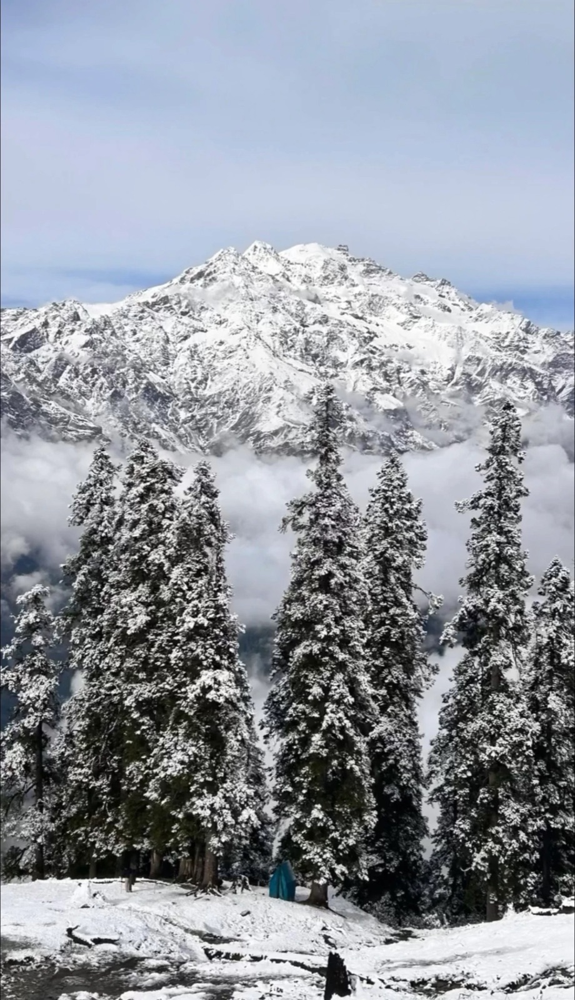
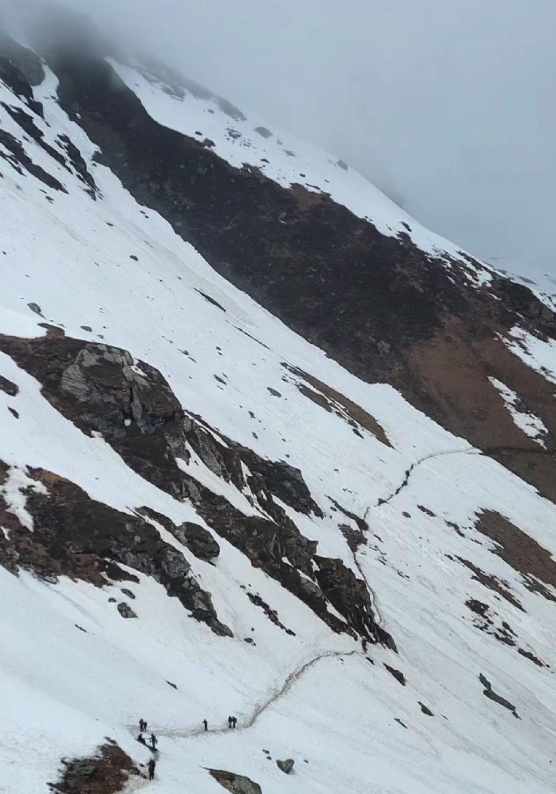
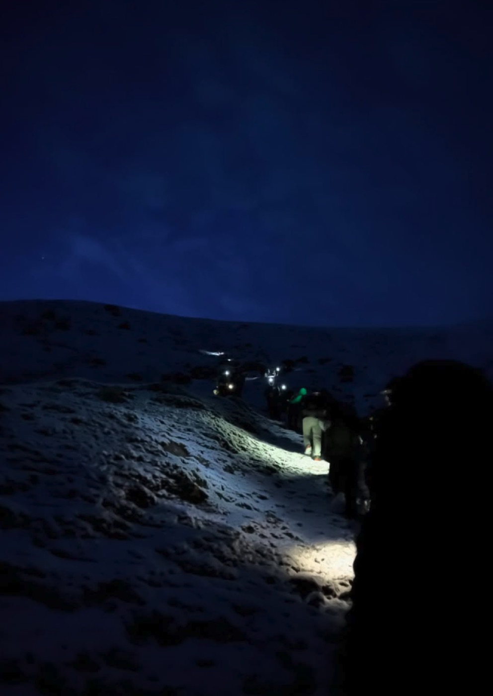
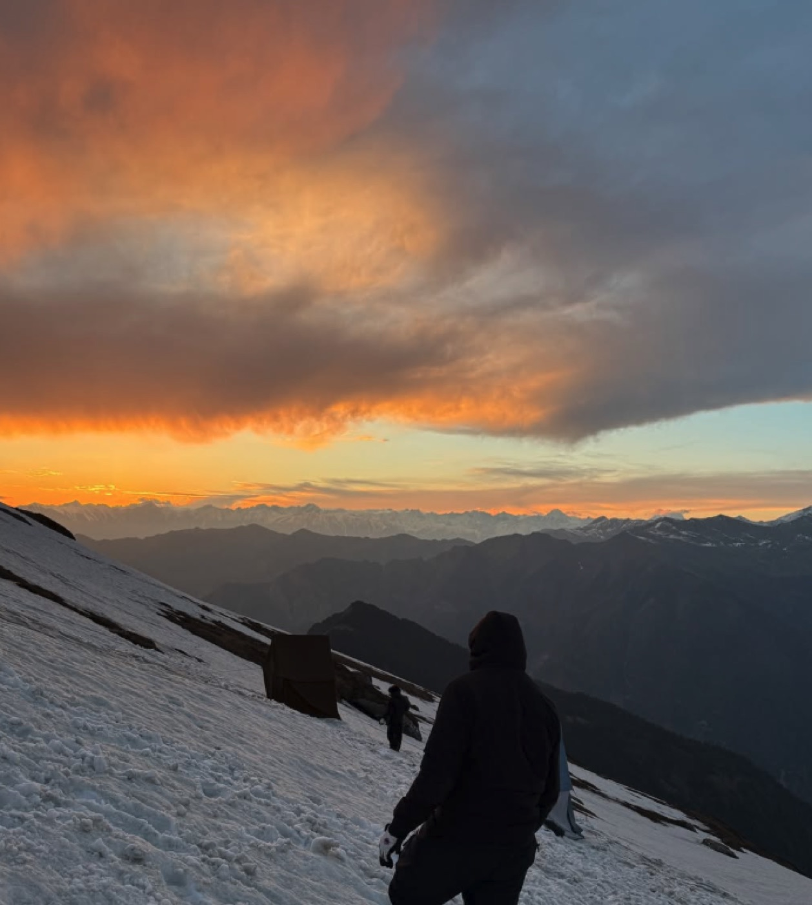
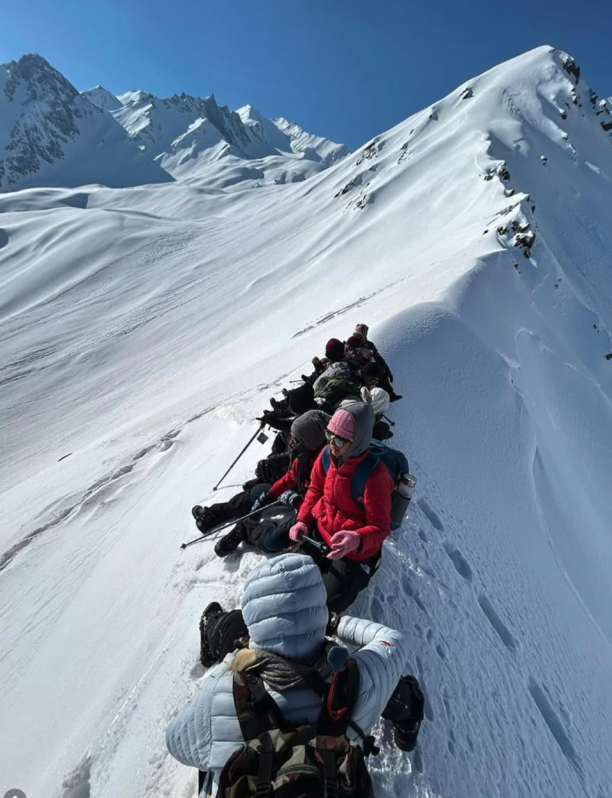
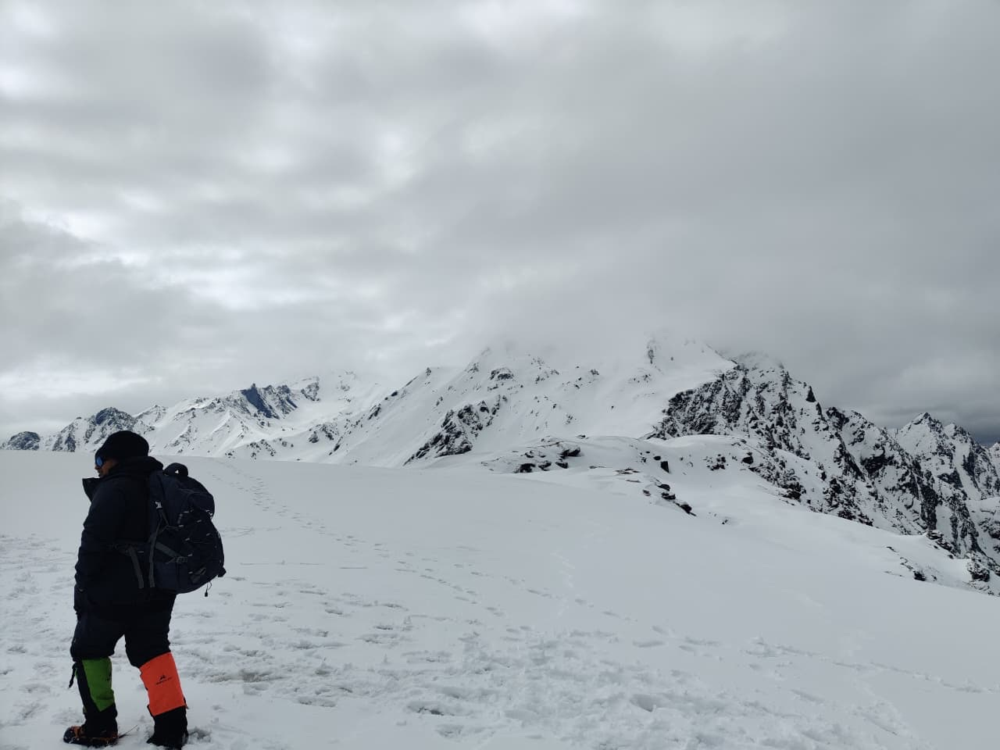

Sar Pass · 5 days, 6 nights · ≈14,000 ft
Five moments from the climb, and the work they remind me of.
The trek was the hardest thing I have done on foot. Looking back, each day asked for something I also bring to my work.

The first lesson of altitude is pacing. Learn the mountain before it tests you.
Learning the mountain
I joined Ivanti's Secure Access team as an iOS engineer. Within two years I was pulled onto the Android team, then the Mac and Windows teams, learning each platform as I went. Working across the clients showed me how the whole product fit together, and I carried what I learned on one team to the next. Along the way I helped take a device compliance feature from 0 to 1. It checks a device's health before granting access across VPN, NAC and Zero Trust.

The trail disappears under snow. You read the slope, follow the footsteps ahead, and change the plan when the weather changes.
When the trail disappears
The iOS 17 beta opened a local network vulnerability that affected every VPN, ours included. We had no fix, and our tickets with Apple kept getting opened and closed. With WWDC around the corner, I used it to get one-on-one time with Apple's network engineers and talk through the blocker directly. I then built the fix with our lead architect.

A circle of headlamp light, the boots in front of you, and the loudest self-doubt of the trip. The answer is the next step.
Climbing in the dark
When high-security features failed in the field, a fix took days to reach customers. I rolled out remote kill switches so the team could act in a minute. In one quarter I worked through more than 100 critical customer issues.
The fastest way down is to sit in the snow, push off, and trust the slope.
Letting go on the far side
I left a stable engineering job to move into product at Duke. My first project was leading a four-person team for ShopSight's CEO, from 50+ customer interviews to PRDs, prototypes and features shipped with their engineers.

The ranges appeared below us, and the next ridge appeared ahead. That view is why I climb.
The next ridge
AI agents are new terrain for everyone, so I started building them. Most of my effort goes into their limits: what an agent may touch, what it must check first, and when it has to stop.

What I bring
What I would bring to your team
Discovery that ends in shipping
I turn customer interviews into PRDs, user stories and roadmaps, and test ideas with prototypes before engineering spends a sprint on them.
Enterprise security depth
Two years building VPN, NAC and Zero Trust products across iOS, Android, Mac and Windows for 10K+ enterprise customers. I know what large customers need before they will trust a product.
AI agents with guardrails
I build agents and AI workflows, and I use AI every day to research, draft and prototype faster. I also know where agents break and how to fence them in.
An engineer's respect for engineers
I have written the code and sat in the sprint reviews. I write requirements engineers can build from, and I ask the questions that keep a deadline from slipping.
What I want to work on next
AI agents will have to earn trust one action at a time. I want to help build the products that earn it.
At Ivanti I built the checks that verify a device before it gets access, and the switches that turn a feature off in a minute. At Duke I build agents and their limits. I want to bring both to a team building products that customers trust with real systems.
My first 90 days
Climb high, sleep low
On a high trek you climb higher during the day than where you sleep, so your body adapts without breaking. I join a new team the same way.
Learn the terrain
- Use the product, its APIs and its admin workflows the way a customer would.
- Join customer calls with field teams, and read escalations and usage data.
- Map where the largest customers feel the most friction today.
Listen at altitude
- Run structured interviews with the customers who use the product most.
- Use an agent workflow to synthesize what we hear, and check its output myself.
- Learn the competitive landscape from sales and product marketing.
First crossing
- Own one capability end to end, from PRD to early access.
- Agree on adoption, usage and satisfaction targets with engineering.
- Bring the first early-access feedback back into the roadmap.

Take the path less traveled, and be courageous even when the self-doubt kicks in.
Get in touch
I'd love to hear what your team is building.
I'm looking for product roles where enterprise customers, platforms and AI meet.
shweta.mittal@duke.edu